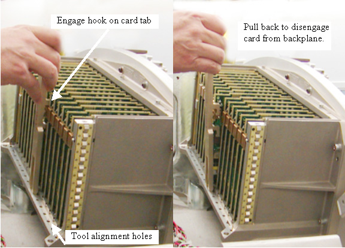
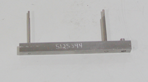
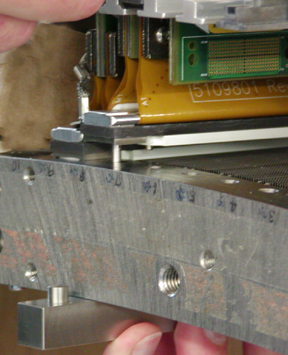
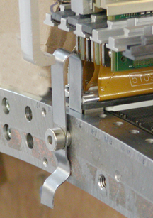
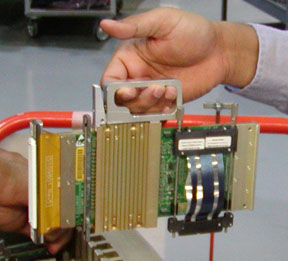

Operating Documentation
Direction 5193574-800, Rev# 22
LightSpeed 7.X Service Methods
Module Version 2.0, Version Date 4/21/09
Operating Documentation |
The VCT DAS and Detector require special tools to perform standard service operations. See below for a description of the tools required. Each procedure will also call out details for using these tools.
| Last Revised: | January 30, 2009 |
The DAS Digital Interface Boards (DIFB) and the DCB in the VDAS are spaced very close together. You may need to use the ejection tool supplied with VCT systems that were delivered with a VDAS detector due to the limited space and finger access to remove the cards from the DIFB chassis.
| NOTE: | Do NOT use the ejection tool to insert the DIFB or DCB boards. Using this tool for insertion may cause connector damage. Push on the card tab with your finger to seat the board into the slot. |
Illustration 1: DIFB and DCB ejection tool (VDAS ONLY)

Illustration 2: DIFB/DCB ejection tool usage (VDAS ONLY)

The VCT detector modules require special tools to safely insert a Field Replaceable Detector Module (FRDM) into the VCT detector. The tools are defined here. The FRDM replacement procedure further defines their use.
The tools required are shipped with the system in the Detector service kit and with each FRU. These tools include but not limited to the following:
Controlled Seating Tool
Module Bias Tool
FRDM handle
Illustration 3: Controlled Seating Tool

The controlled seating tool is inserted into the screw holes for the detector module to center the module on the detector collimator plates to avoid damage to plates or detector rails. See Illustration 4 for example usage showing tool inserted while letting detector module come down to meet the alignment pins.
Illustration 4: Controlled Seating Tool usage

The bias tool is shown in Illustration 5. It is a spring finger that attaches to the detector rail using a magnet and applies a known force to push the detector module against the rail on the backside of the detector.
Illustration 5: Module Bias Tool

The FRDM handle is attached to the heat sink giving the service person a handle to use when replacing an FRDM. This tool was shipped with the early VDAS systems. All newer systems and FRU's have a handle built into the heat sink of the module.
Illustration 6: FRDM Handle (Old VDAS Modules only)
